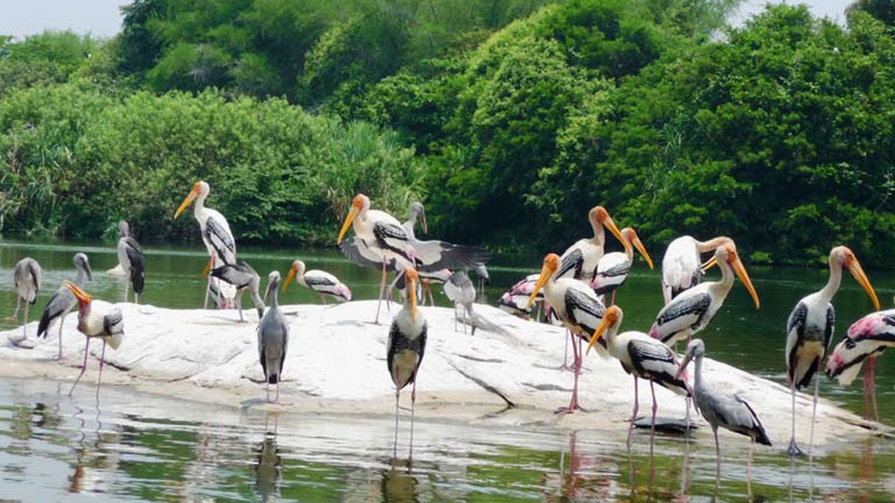
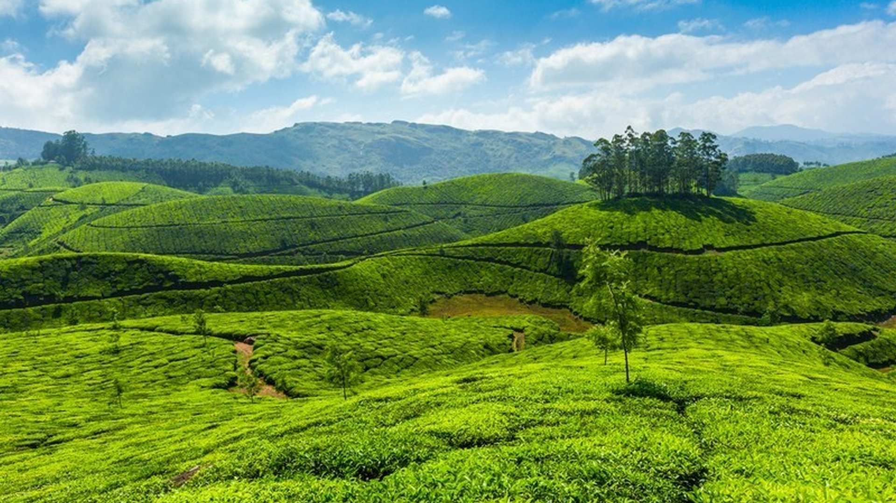

Kottayam is a city in the Indian state of Kerala. The city of Kottayam is also called as "Akshara Nagari" which means the "City of Letters" considering its contribution to print media and literature. Kottayam is located in southern Kerala and is also the administrative capital of the Kottayam district.The town is an important trading center of spices and commercial crops, especially rubber.It is believed that the name kottayam originated from the Malayalam words "kotta" meaning fort and "akam" meaning inside, giving the word the meaning of "the interior of the fort". The old town of Kottayam was originally founded on the hilltop now known as Kunnumpuram. This fortress was called Thaliyil Kotta and was founded by the local chieftain or RAJA known as the Thekkumcoor RAJA. The small hamlet developed within the walls of the fort and thus was derived the present name from the words "Kottackk Akam" which literally means "Inside the Fortress". It is commonly believed that down the ages this gradually assumed its present form, Kottayam.
Vagamon
Situated 64kms from Kottayam, this enchanting hill station at an elevation of 1100 metres above sea level is a trekker’s paradise. This enchanting hill station on the Idukki-Kottayam border dotted with tea gardens and meadows, will soon be one of India's foremost Eco tourism projects.

Kumarakom
Kumarakom is a small village 14km. west of Kottayam. An attraction of Kumarakom is the Bird sanctuary spreading over 14 acres of land.

Elaveezhapoonchira
Elaveezha poonchira, a hill station near Melukavu Mattom, 60kms from Kottayam is gaining tourist importance. Located among three beautiful hillocks Mankunnu, Kudayathoormala and Thonippara, Poonchira is a place of picturesque charm.
Kottayam was ruled by the Rajas of the independent little kingdom of Thekkumkoor ruled from Thazhathangady till the mid-18th century. At that time, Marthanda Varma,the king of Travancore annexed Thekkumcore and surrounding areas of Kottayam to the Kingdom of Travancore. During the British rule of India, Kottayam continued to be ruled under the Princely State of Travancore. The present district of Kottayam was part of erstwhile princely state of Travancore. The Travancore state consisted of two revenue divisions viz., the South and the North, under the administrative control of a Divan Peshkar for each. Later, in 1868, two more divisions, Quilon and Kottayam, were constituted. The fifth division - Devikulam, came next but for a short period, which in course of time was made part of Kottayam.